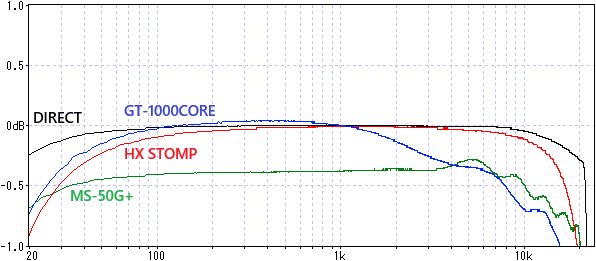
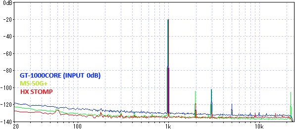
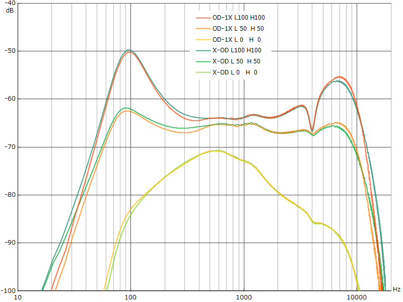
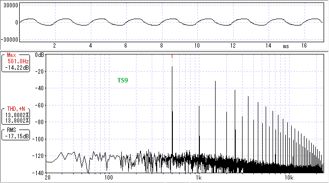

BOSS GT-1000CORE 分解・特性測定
2024年08月31日 カテゴリー：修理・改造・解析
LINE 6 HX Stompに引き続き、BOSS GT-1000COREを分解、特性測定しました。
▽基板画像
＜主なIC等＞
Roland BMC 5100040716: DSP？
NJM2732: 入出力フルスイングオペアンプ
FL128SAIFG0: フラッシュメモリ
AK4558EN: オーディオコーデック
S-80130ANMC-JCPT2G？（マーキング JCPS）
BD9865MWV: 昇降圧・反転スイッチングレギュレータ
NJM11100F1: リニアレギュレータ
HFD4/9:リレー
NJM4580: オーディオ用オペアンプ
NJM2740: 低飽和出力電圧オペアンプ
IS42S16160J-7BL: SDRAM
Roland R5100036692-100: ディスプレイ操作用マイコン？
74HC3G14: シュミット・トリガ入力インバータ
BU2090FS: シリアルインパラレルアウトドライバ
TC7W04FK: CMOSインバータ
フォトカプラ？（マーキング M614 1931 ATW 3.5mmx4mm）
BMC 5100040716はRoland AX-Edge（ショルダーキーボード）の分解動画で音源チップとして紹介されています。詳細はわかりませんが、消費電流が大きくないのでそこまで演算能力は高くなさそうです。同時使用エフェクト数は最大24個ですが、重いエフェクト処理を個数制限（プリアンプ2個、リバーブ1個等）することにより、DSPの処理能力内にうまく収めていると思われます。
入力部には2SK880があるので、おそらくSD-1W等と同じバッファです。リレーはバイパス用ではなく、各入出力の機能切替用となっているようです。
▽バイパス音 ※画像はHX Stompの記事の再掲
- 周波数特性 ※±1dBに拡大（DIRECT：測定に使用しているオーディオインターフェースUR22Cの入出力を直結）

高音域側のカットが緩やかな形になっています。
- 正弦波 約1kHz 330mVpp

ノイズレベルは少し高めで、入力設定を+20dBにしてもほぼ同じでした。ハイゲイン時には問題となるかもしれません。また、SEND/RETURNをオンにすると、SN比がわずかに悪化しました。レイテンシーはかなり低く、約0.4msでした。（2024年9月3日 データ差し替え、記述変更）
＜実機比較＞
OD-1X、DS-1X、ML-2、BD-2の記事で紹介した周波数特性です。それぞれX-OD、X-DIST、MTL CORE、BLUES ODと比較しています。※X-ODとX-DISTの設定値-50～+50は0～100として記載



OD-1Xについてはほとんど同じですが、それ以外の機種については違いがあります。
T-SCREAMとTS9実機との比較です。
TONE50%の時は似ていますが、BOTTOMやTONEはピーキングタイプのイコライザのような動きです。また、HX StompのScream 808と同様、7kHzあたりから高音域が下がっています。ただし、GT-1000COREはサンプリング周波数96kHz（ナイキスト周波数は48kHz）のはずなので、意図的なカットだと思われます。
T-SCREAMとTS9の波形・倍音です。

Scream 808と同様、偶数次倍音は出ていません。
他の機種については、TONEの動きが実機と同じもの（DS-1等）もありました。しかしながら、基本的に正確なモデリングは期待できないと考えたほうがよいでしょう。全ての歪み系エフェクトでBOTTOM（低音域調整）やDIR MIX（クリーンミックス）のコントロールがあるので、この点については使いやすく感じることがありそうです。
Fender Twin Reverbのモデリング、SP TYPE OFFでの周波数特性です。

GT-1000COREのTWINは低音域と高音域のカットがあります。
GT-1000COREでキャビネットシミュレータのみを使う方法がこちらのページで紹介されています。

上図のように、プリアンプをオンにしつつMIXでプリアンプ側を0にします。OUTPUT SELECTをRECORDINGにすると、スピーカーの種類を選択できます。ただ、プリアンプの種類によってはSP TYPEをOFFにしても周波数特性がフラットにならないので、パワーアンプのモデリングが加味されている可能性があります。純粋にキャビネットシミュレータのみを使いたい場合、TRANSPARENTやJC-120等のパワーアンプがフラットな特性のプリアンプを選んでおくとよいでしょう。
上記の状態で、AIRD OUTPUT SELECTによる補正がどうなるか確認しました。プリアンプはJC-120です。
OUTPUT SELECTがJC-120 RETURNなら、補正する必要がないのでフラットな特性になります。JC-120 INPUTだと中音域が盛り上がっていて、トーン回路の特性をキャンセルする意図がありそうです。TUBE STACK 412 RETURNに設定すると複雑な形が現れ、意図はよくわかりません。AIRDテクノロジーは単純なEQ補正ではないため、接続先に応じて複雑な処理を行っているようです（参考：AIRDテクノロジーの秘密に迫る！）。他のプリアンプとOUTPUT SELECTの組み合わせでも様々な形が現れますが、フラットになるものは見つかりませんでした。
Twin Reverbのモデリングに設定されているスピーカーの周波数特性です。

GT-1000COREの方がやや高音域が少ないように見えます。個体差や測定環境の違いがあるためだと考えられます。
GT-1000COREはHX Stompとは違い、モデリングにそこまで重きを置いていないようです。しかしながら、MDPやAIRDといったBOSS独自の技術があるので、それらを使った音に魅力があるのではないかと思います。